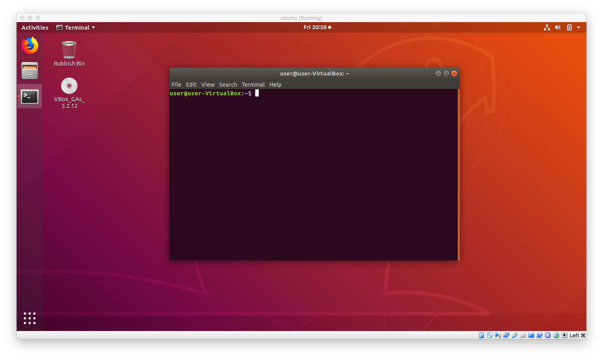
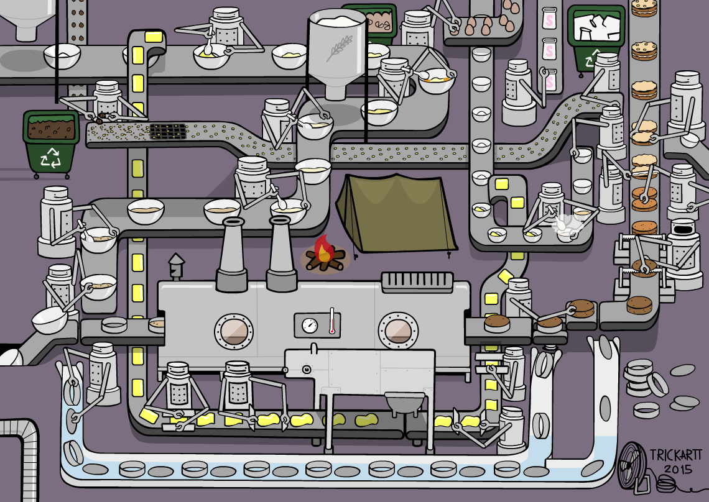
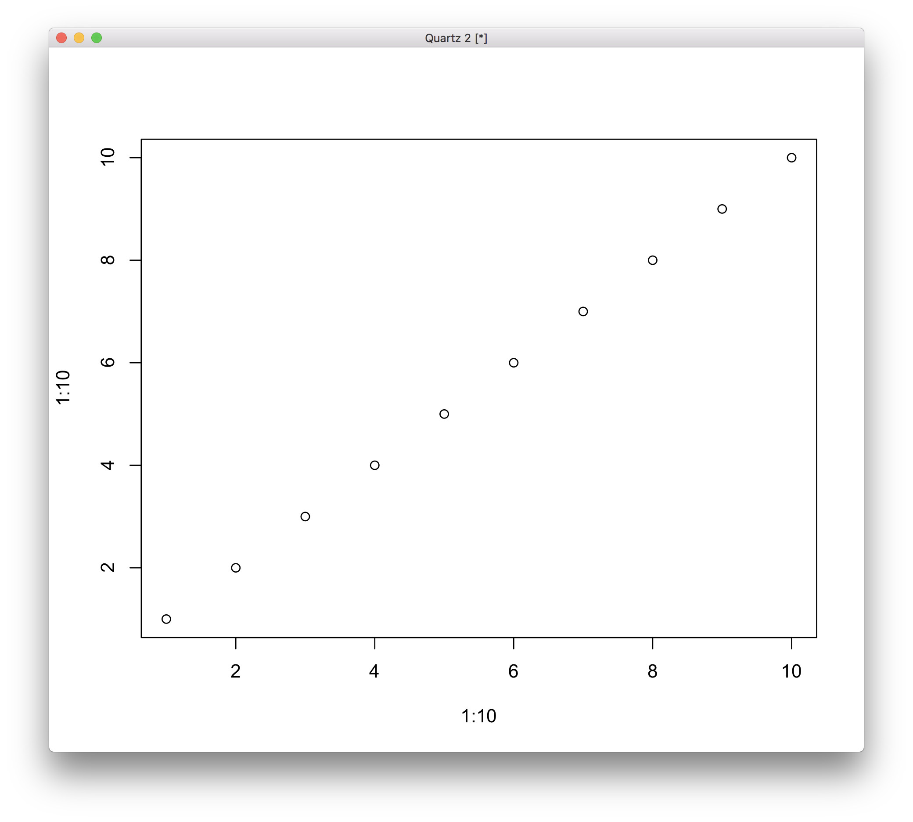

How to explore 'Omics data in a Linux environment
Most bioinformatic software is written for Unix-type systems and is usually operated from the command line. This means that these programs are intended to be used by typing commands and they don't have a graphical user interface (GUI). There are many reasons for this, but two important ones are that command line programs are quicker to develop and also very easy to automate. To get from raw sequences to final results often requires many steps. Imagine processing thousands of isolates: this would potentially involve hundreds of hours and even more mouse clicks if performed with a GUI. Using a command line tool, a workflow can be defined by chaining a series of commands together in a script which can then be rapidly applied to thousands of isolates without much effort.
Over the duration of this course you will be learning the skills required to independently undertake bioinformatic projects. By the end of this course you should be comfortable to go all the way from raw data to biological insights.
In order to learn how to use bioinformatic programs we must first become comfortable with how to use the terminal. This may be daunting if you have never used a command line environment before, but hopefully by the end of this practical session you should have a basic understanding which will be reinforced over the next few sessions.
Let's start by opening a terminal by clicking on the icon on the sidebar. Your screen should now look like the one below:
The terminal is very similar to the file explorer in other operating systems. It allows you to see files and interact with them. The only difference is that we have to do this by typing a command into the terminal window. To demonstrate this, let's open up Linux's file explorer by clicking on the icon in the side-bar on the left-hand side of the screen. When you open the file explorer it will go to your home folder and show you all the sub-folders and files present. The home folder is simply the root folder which contains all your files and folders.
You can see a number of sub-folders and files present in the file explorer. Let's see if we can find them in the terminal. To do this, we have to type ls into the terminal and hit enter. You should now see a screen similar to the one below. Now you can see the same files and folders in the terminal.
In the file explorer double click on the data folder. You will see several new folders which hold the data for the proceeding practicals. Let's try find them using the terminal!
When we double clicked on the data folder we effectively moved from the home folder to the data folder. We will have to do the same using the terminal. To do this, type in cd data and hit enter. Now try using ls again to produce the same list of folders that you see in the file explorer.
You will notice that text in front of the $ sign changed when you moved from home to data. You should see something similar to what is shown below:
The blue text shows the location where the terminal is currently. In this case we are in ~/data. Another name for this is the current directory. The ~ character is a special character which symbolises your home directory. So, we can interpret this as "We are currently in the data directory which is in the home directory"
Now that we are familiar with the terminal let's dive in and take a look at a couple of programs that we will be using.
Change to the tb directory and have a look at the files. Hopefully you will be able to see the tb.fasta file. The file is just a very large text file which stores the sequence data of the M. tuberculosis reference genome. We can use head to take a look at the first few lines of a file. Let's try it:
cd tb
ls
head tb.fastaHopefully you will see something like this:
We can see that by default head prints out the first 10 lines. We can modify this number by providing an additional parameter.
head -5 tb.fastaThis command it will print out the first five lines instead. Here we have used an optional parameter (the program will still function properly without it). Optional parameters are usually given by providing two values, in this case -n and 5. The first value specified what parameter we want to provide (e.g. -n = number of lines) and the second value is that which the parameter must take (e.g. 5 will tell the command to print the first five lines).
Another tool that we can use to view text files is the less command. Let's try view the reference file again with this method.
less tb.fastaThis will open an interactive viewer which fills up the screen. You can move up and down the file using the up and down keys on the keyboard. When you are finished viewing, hit the q key to quit the viewer.
If we need to copy a file we can use the cp command. We need to give two arguments: the file we want to copy and the filename of the copy. Let's try it:
cp tb.fasta tb_copyLet's give our file an extension. To do this we have to rename the file. The command for this is mv which stands for move. This command allows you to both move and rename files. Try to add an extension to the file by using the following code:
mv tb_copy tb_copy.fasta
We now have two files with the same content. Let's remove our copy of the reference by using the rm command:
rm tb_copy.fastaImagine a cake factory production line. There are many steps that need to be taken to build the final cake (different ingredients added). Let's say we have 5 people working to make 100 cakes per day and each person specialises in adding a particular ingredient. We could get 100 bowls and add the flour to each one, then add eggs to each one and repeat this with each ingredient until we have the complete mix however we would be losing a lot of time as at any point there would be only one person working while the others wait for their turn. A more efficient way to do this by installing in a conveyor belt and having the employees sequentially add their ingredients to each bowl. This way everyone is working at the same time and the cakes will be made a lot faster.
The same principals apply to bioinformatic analyses. For example, take a look at the steps required to align raw data to a reference genome and storing it in a BAM file:
mapping_command | sam->bam_command | sorting_commandThis is the form pipes will take and we will see several examples over the next few practicals.
Sometimes an error may occur while trying to run a command. There may be a number of different reasons for this and troubleshooting is an important skill to master.
There are some errors which are are commonly made. We have listed a few below.
These types of error may present in different ways depending on the command used. For example, let's try change to a directory that doesn't exist.
cd fake_directoryYou should see something like this:
This tells us that cd could not find the directory called fake_directory.
If you run a program and fail to specify a it may give an error. Alternatively, it may display the program usage help and quit. For example, lets run head without passing the number of lines to the -n flag:
head -n tb.fastaYou should see an error similar to that displayed below:
The error is a bit cryptic but from the illegal line count, we can see that whatever parameter we passed to -n (which determines how many lines are printed) is not a valid value. It turns out that this value always has to be a number, however since we left out that parameter it parses tb.fasta as the value and that causes the error.
conda environments. These allow to have multiple versions of the same program to be installed or – which is more relevant in our case – to use programs that have conflicting dependencies. If you run into a command not found error, it is always a good idea to check if the correct conda environment for the current practical is activated (the name of the currently active environment is usually printed in parenthesis to the left of your prompt). You can activate an environment with
conda activate environment_nameand check which environments are available with
conda env list
In some parts of the practial you will be asked to open R. R is a free software environment for statistical
computing and graphics. It compiles and runs on a wide variety of UNIX platforms, Windows and MacOS. We will
be using it to run analysis and visualise results. R runs on the terminal and is installed in some of the conda environments installed on the VM and remote machines. Activate one of these environments by running
conda activate nanoporeand start R by typing R and hitting enter. Go ahead and try it now. After running R you should see something like this in the terminal:
It migt look slightly different depending on the version installed, but once you can see the '>' you are ready to type in commands. Try this for example:
1+2This will output a value of '3'. You can store values in variables so you can access them later. Try this:
x<-1+2
x+1You should have gotten an output of '4' after executing the final line. Here we stored the outcome of 1+2 in x and then asked R to output x+1.
We can also use R to visualise data. Try to run the following:
plot(1:10,1:10)A plot similar to the one below should appear.

We do not expect you to master R during this course, but rather to know how to run commands and understand
what they are doing. You can exit R by typing quit()
followed by n.
That is it for the into to linux. You are now ready to go on the practicals. Good luck!